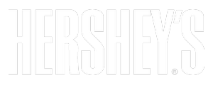
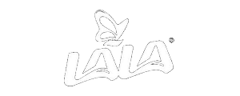

Conversación
Imberion × Cliente
Cómo capturar valor en decisiones comerciales con IA.
20 de abril de 2026
Imberion intro · 2026-04
01 / 10
Objetivos de la Sesión
Una agenda concreta, no una demo.
Alinear una visión sobre la evolución comercial en su empresa, evaluar sus palancas actuales e identificar oportunidades concretas para definir un posible siguiente paso conjunto.
Imberion intro · 2026-04
02 / 10
Agenda
Dos movimientos, una conversación.
01
Acerca de Imberion.
~ 20 min
02
Madurez, aspiraciones y retos.
~ 40 min
Imberion intro · 2026-04
03 / 10
¿Por qué existe Imberion?
El valor de la AI en empresas industriales no está capturándose donde realmente impacta el margen.
Implicación
El mayor pool de valor permanece sin capturar.
- La inversión en AI se ha enfocado en eficiencia operativa, con retornos acotados.
- Las decisiones que definen el resultado comercial siguen siendo discrecionales y poco escalables.
- Existe una brecha estructural entre la información disponible y su uso en decisiones críticas.
- Las herramientas actuales generan visibilidad, pero no cambian el comportamiento.
- →Imberion habilita decisiones comerciales consistentes, escalables y con impacto medible.
Imberion intro · 2026-04
04 / 10
El Modelo Imberion
Inteligencia y ejecución comercial integradas para evolucionar capacidades.
Tres bloques que operan como un loop completo — o desplegados donde la necesidad es mayor.
A
Bloque A
Infraestructura de información
Base confiable sobre la cual se toman decisiones comerciales.
- Integra, limpia y estructura datos de ventas, clientes, pedidos y operación.
- Cuando la información no existe, se define cómo generarla.
B
Bloque B
Inteligencia comercial
Eleva la calidad de las decisiones y las hace consistentes.
- Precio, portafolio, promociones, política comercial y GTM.
- Agentes de IA que analizan, recomiendan y explican.
- Integra reglas de negocio, criterio comercial y datos.
- Prioriza por impacto económico.
C
Bloque C
Ejecución y captura de valor
Convierte decisiones en resultados, fortaleciendo la operación.
- Traduce decisiones en acciones concretas.
- Fortalece el modelo operativo.
- Gestiona la adopción (change management).
- Desarrolla capacidades en el equipo.
- Mide impacto y ajusta continuamente.
Diseñado para operar como un loop completo — o desplegado donde la necesidad es mayor.
Imberion intro · 2026-04
05 / 10
Nuestra Experiencia
Decisiones comerciales complejas, ejecutadas en el mundo real.
- Estrategia comercial + analítica avanzada + arquitectura de datos.
- Experiencia en RGM en consumo, industrial y retail.
- Implementación real: del modelo a la ejecución en campo.
- Integración directa con los equipos comerciales del cliente.
Selección de clientes




Proyectos ejecutados globalmente · foco en Latinoamérica
 Imberion intro · 2026-04
06 / 10
Imberion intro · 2026-04
06 / 10
Lo que entrega el Sistema
Rangos de impacto típicos — B2B industrial.
Benchmarks de referencia en proyectos de RGM aplicados a B2B industrial.
+2–5%
Mejora en margen
Por disciplina comercial y pricing sistematizado.
+5–15%
Crecimiento en ventas
En 6 a 12 meses, por escalabilidad y mejor ejecución.
15–30%
Optimización de inversión comercial
Reasignando gasto hacia lo que sí funciona.
Rangos de referencia de la industria. El impacto real depende del punto de partida y la disciplina de ejecución.
Imberion intro · 2026-04
07 / 10
Modelo de Madurez Comercial · B2B Industrial
De decisiones discrecionales a decisiones inteligentes y escalables.
La diferencia no es usar AI o no. Es cómo evoluciona su rol: de eficiencia → a soporte → a decisiones.
| DiscrecionalImprovisa | ReactivoDefiende | ProactivoAtaca | InteligenteHace la diferencia | |
|---|---|---|---|---|
| Margen | Costeo promedio; confunde facturación con rentabilidad. | Por producto, a posteriori; clientes no rentables se descubren tarde. | Real por cliente, SKU y pedido. Costo de servir. | Simulado antes de cotizar; alertas tempranas de erosión. |
| Cliente | Conocimiento superficial; sin segmentación. | CRM: historial no explotado; segmentación por tamaño o geografía. | ICP; segmentación por potencial; cross / up-sell mapeados. | Señales de compra y churn continuas; siguiente mejor acción por cuenta. |
| Precio | Sin lista; costo + margen deseado. | Lista no se sigue. Diferenciación solo por volumen. | Por valor, segmento y contexto; business case por cliente; guardrails. | Sugerido en tiempo real; elasticidad y win-rate simulados. |
| Portafolio / Mix | Se vende lo que el cliente pide; portafolio sin roles. | ABC existe, no dirige la venta. | Mix objetivo por cliente; productos con roles; incentivos alineados al mix. | Mix recomendado por pedido; racionalización continua; trade-offs a priori. |
| Inversión comercial | Crédito, descuentos y plazos a criterio. | Política dispar; se mide venta, no margen neto ni canibalización. | Trade terms con contraprestaciones; promos con ex-ante y post-mortem. | Diseñadas con simulación: ROI visible a priori; cada inversión alimenta la siguiente. |
| WoW y gobernanza | Decisiones dependen de 1 o 2 personas. | Procesos documentados, ejecución inconsistente. | Procesos, forecasts y comités en el día a día. | Decisiones trazables punta a punta; aprendizaje sistemático. |
La diferencia no es usar AI o no. Es cómo evoluciona su rol: de eficiencia → a soporte → a decisiones.
Imberion intro · 2026-04
08 / 10
Cómo trabajamos juntos
Nos adaptamos a dónde están hoy.
Dos puntos de entrada, una misma ruta hacia resultados medibles.
Track A
"Sé lo que necesito."
Diseño
Definir
- Entendemos el problema y definimos la solución.
- Especificamos datos, integración y alcance.
- Entregamos plan de trabajo y business case.
Implementación
Construir
- Desarrollamos modelos, agentes o herramientas.
- Integramos con sus sistemas y datos.
- Habilitamos al equipo para operar.
Resultados
Capturar
- El capability opera en su flujo comercial.
- Medimos impacto contra el business case.
- Ajustamos y optimizamos con base en resultados.
Track B
"Quiero entender mis oportunidades."
Descubrimiento
Mapear
- Mapeamos su madurez comercial por dimensión.
- Identificamos las brechas de mayor impacto.
- Entregamos business case con oportunidades priorizadas.
Implementación
Cerrar brechas
- Construimos el capability que cierra las brechas.
- Integramos con sus sistemas y datos.
- Habilitamos al equipo para operar.
Evolución
Escalar
- Acompañamos la captura de valor en campo.
- Incorporamos nuevos casos de uso.
- Cada decisión retroalimenta y mejora el sistema.
En todos los casos: business case primero. Si no se paga solo, no lo proponemos.
Imberion intro · 2026-04
09 / 10
Siguiente paso
No necesitas estar listo para empezar.
La madurez comercial no es un requisito previo — es el resultado. Definamos cómo capturar valor en tu operación.
Imberion intro · 2026-04
10 / 10